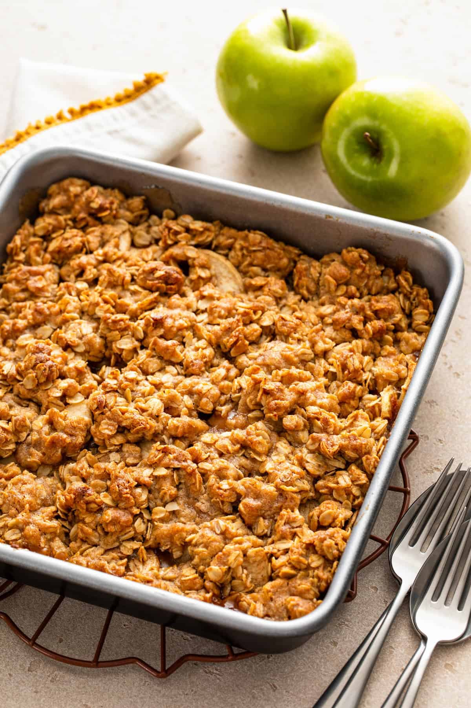

Dessert
Classic Apple Crisp
A cozy autumn classic with cinnamon-spiced apples and a buttery oat topping. Serve warm with vanilla ice cream!
Ingredients
- 6 cups peeled, sliced apples
- 2 tbsp sugar
- 1 tsp cinnamon
- 1 cup rolled oats
- 1/2 cup flour
- 1/2 cup brown sugar
- 6 tbsp cold butter
Instructions
- Preheat oven to 350°F. Grease a baking dish.
- Toss apples with sugar and cinnamon. Spread in the dish.
- Mix oats, flour, brown sugar, and butter until crumbly.
- Sprinkle topping over apples.
- Bake 40-45 minutes until golden and bubbly.